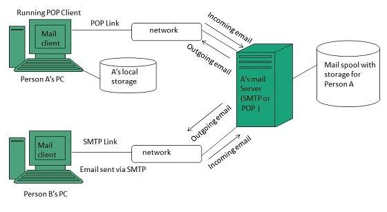

This is the heading of Page3
WWW stands for World Wide Web. A technical definition of the World Wide Web is : all the resources and users on the Internet that are using the Hypertext Transfer Protocol (HTTP).
User Interface Work on higher quality presentation of 3-D information is under deveopment. The W3 Consortium is also looking forward to enhance the web to full fill requirements of global communities which would include all regional languages and writing systems.
WWW Operation WWW works on client- server approach. Following steps explains how the web works: WWW works on client- server approach. Following steps explains how the web works: User enters the URL (say, http://www.tutorialspoint.com) of the web page in the address bar of web browser. Then browser requests the Domain Name Server for the IP address corresponding to www.tutorialspoint.com. After receiving IP address, browser sends the request for web page to the web server using HTTP protocol which specifies the way the browser and web server communicates. Then web server receives request using HTTP protocol and checks its search for the requested web page. If found it returns it back to the web browser and close the HTTP connection. Now the web browser receives the web page, It interprets it and display the contents of web page in web browser’s window.
Technology Work on privacy and security is under way. This would include hiding information, accounting, access control, integrity and risk management. There had been a rapid development in field of web. It has its impact in almost every area such as education, research, technology, commerce, marketing etc. So the future of web is almost unpredictable. Apart from huge development in field of WWW, there are also some technical issues that W3 consortium has to cope up with. Architecture There has been huge growth in field of web which may lead to overload the internet and degrade its performance. Hence more better protocol are required to be developed.
Overview WWW stands for World Wide Web. A technical definition of the World Wide Web is : all the resources and users on the Internet that are using the Hypertext Transfer Protocol (HTTP). A broader definition comes from the organization that Web inventor Tim Berners-Lee helped found, the World Wide Web Consortium (W3C). The World Wide Web is the universe of network-accessible information, an embodiment of human knowledge. In simple terms, The World Wide Web is a way of exchanging information between computers on the Internet, tying them together into a vast collection of interactive multimedia resources. Internet and Web is not the same thing: Web uses internet to pass over the information.